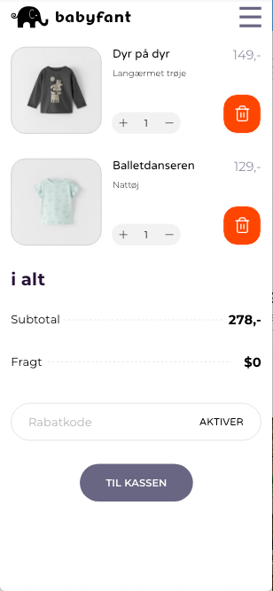
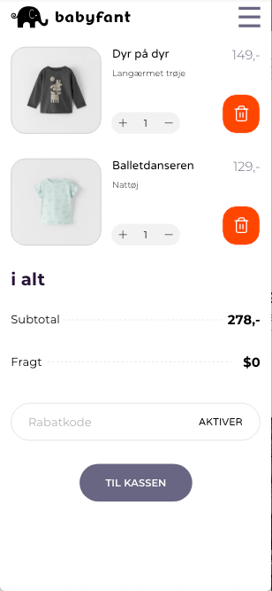

UX design af webshop
Design af webshop med user experience i centrum
Design af webshop med user experience i centrum


 

Jeg startede med at lave en desk research af t-shirt markedet, og hvordan man sælger online. Med desk research forståes en undersøgelse af et marked for at udpege eksisterende normer og ltag. Formålet her af er, at få en forståelse af markedet i dag, samt forstå hvilken vej markedet bevæger sig.
De 10 vigtigste indsigter jeg fandt:

Jeg begynte at på en storme og konkretisere ideen til webshoppen.
Emne for shoppen:
USP for webshoppen:
Indsigter jeg fokuser på:
Jeg brugte Adobe Xd til at designe webshoppen. Jeg har linkket de forskelige sider sammen med Xd's prototype modul. På den måde, har jeg kunne teste mit design på målgruppen.
Jeg brugte The Five Act interview til at få indsigt og bedrings forslag til mit design. Jeg fandt ud af at min målgruppe:
Jeg løste udforringerne i mit design. Du kan se det færdige resutat her:
Se webshoppen
Vi sluttede forløbet af med at holde en præsentation af vores webshop design.